Developers Ke Shaoteng（柯绍腾）from UNNC
Qin Haoxuan（秦颢轩）from SUSTECH
Lin Yuhang（林雨航） from SUSTECH
Zeng Xianqing（曾宪清）from SUSTECH
Alien Odyssey: Cthulhu's Awakening
This is an enigmatic 2D game which includes weaving platform jumping elements with intense battles and skill-based combat. Diverse characters offer unique movements, each contributing to the players' thrilling journey through this dark Cthulhu world. Venturing through various types of landscapes, players shall encounter an array of formidable foes and menacing bosses, testing their prowess and courage. But beware, for a looming threat shadows their every step—the Sanity System. Straying far from the ethereal light shall attract the pursuit of a spectral nemesis, adding a sinister twist to the adventure. Prepare to immerse yourself in the mysteries of our Cthulhu-inspired game. Conquer demons, and embrace the chilling essence of the unknown!
Game Pitch
Click to Play
Booklet (EN)
Booklet (CN)
 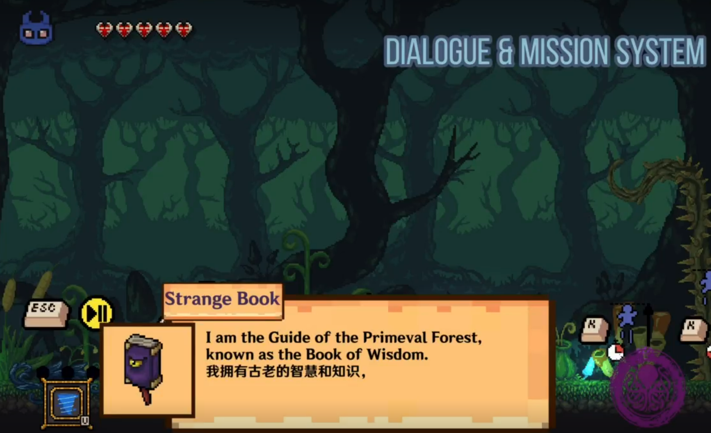
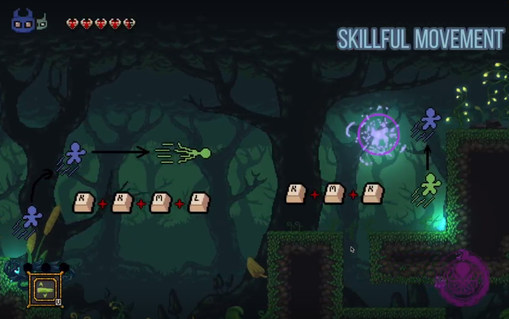
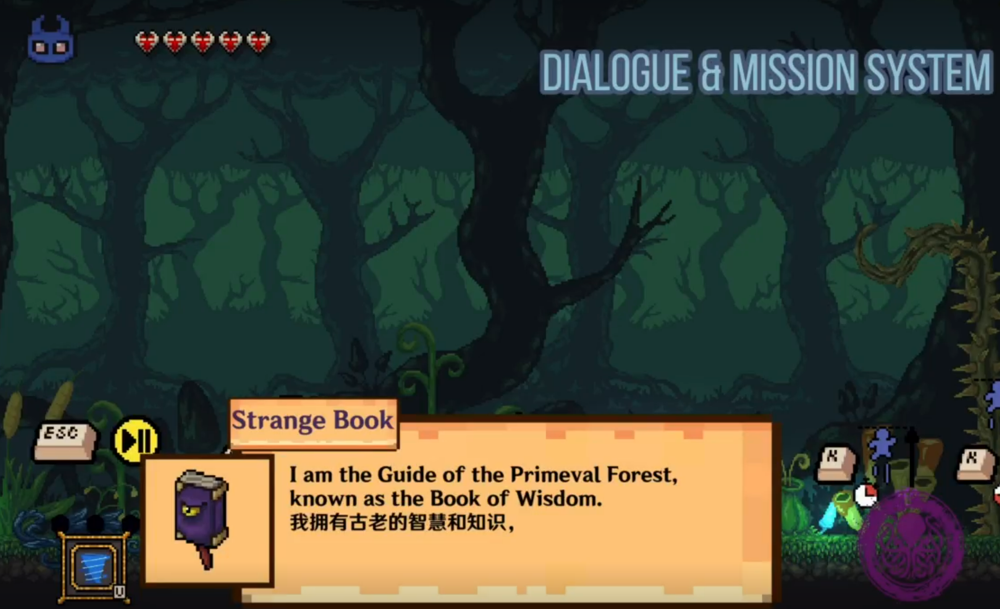
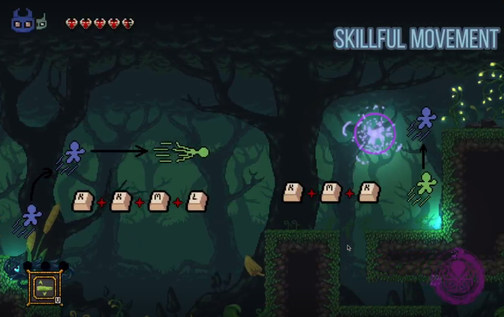
 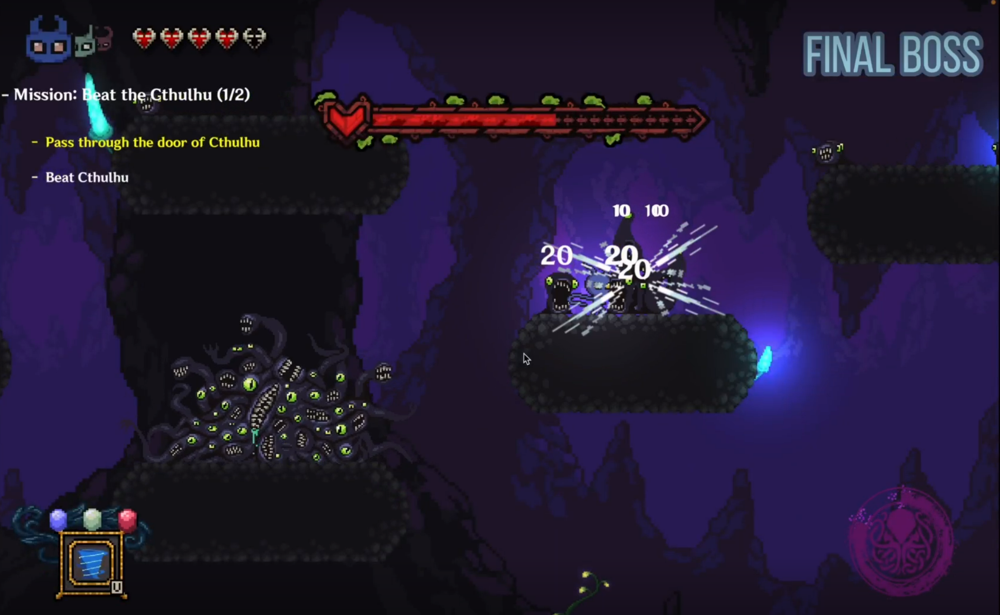
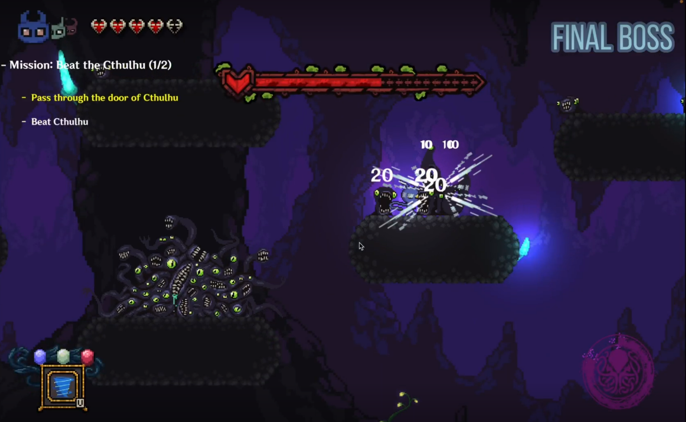
New Text He Shutao
Shi Jianrui
Wan Xiaoyang
Zhang Yiyao
Build And Hit
You are the most powerful warrior of your race in Gehenna, and you hope to bring glory and wealth to your people through beating your opponent.
In the game, you can choose your character and play against your opponent with the goal of eliminating all of your opponent's blocks to win. During the battle, you can use your character's unique skills or powerful randomly triggered skills, which are important weapons on your way to victory. Use your intelligence and strategy to win!
Game Pitch
Web GL - Click to Play


Developers An Yanru
Chen Hongxi
Hsieh Chengtai
Wang Ziyang
Try, Ango!
You want some challenging puzzles?
"Try, Ango!" is an adventure puzzle game. Ango is an apprentice blacksmith. In order to cure his respected master, he chooses to take on the king's mission: searching for hidden treasures around the world. You will play as Ango in the game, embarking on adventures in various places and overcoming puzzles with your tools and skills. The kingdom's unknown history and the king's secrets will also be revealed during the adventurous journey.
.png)
.png)
.png)
.png)
.png)
.png)
.png)
.png)

Developers 凌微月(Ling Weiyue)
刘俊琦(Liu Junqi)
任健鹏(Ren Jianpeng)
马俊航(Ma Junhang)
Seek My Sheep
It is a story about Memory, Existence and Life.
Bright Line: An elderly shepherd loses all his beloved sheep in a storm, so he embarks on a journey to find his beloved sheep. Dark Lines: As the story of the game unfolds, the player will find that time and space will gradually begin to distort the rest of the game. This is because in fact, all the process of finding sheep is the embodiment of the old man's spiritual world, the distortion of time and space represents the gradual collapse of the old man's spiritual world, all the sheep represent the old man's good and precious time in the past, and the process of finding sheep one by one is also the process of the old man picking up his own memory fragments. When an elderly person's memory begins to malfunction, Time is no longer linear for them. The boundary between reality and fiction begins to crumble, Compared to their bodies, their spirits may appear more liberated...
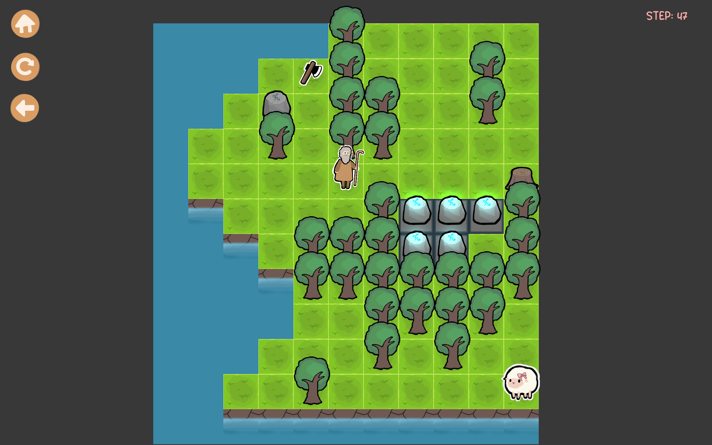 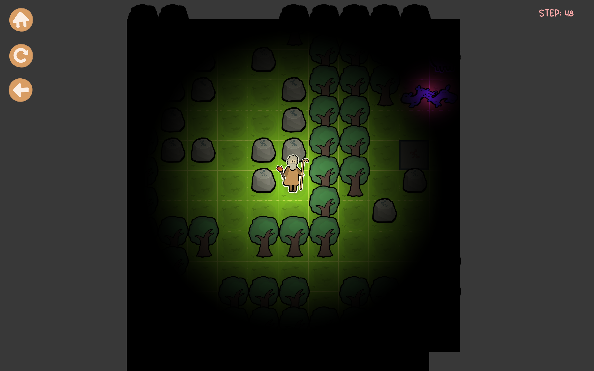 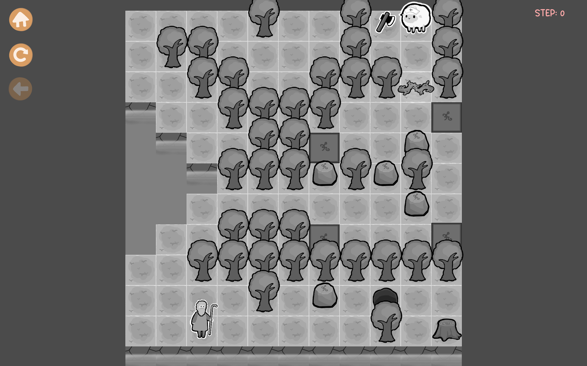 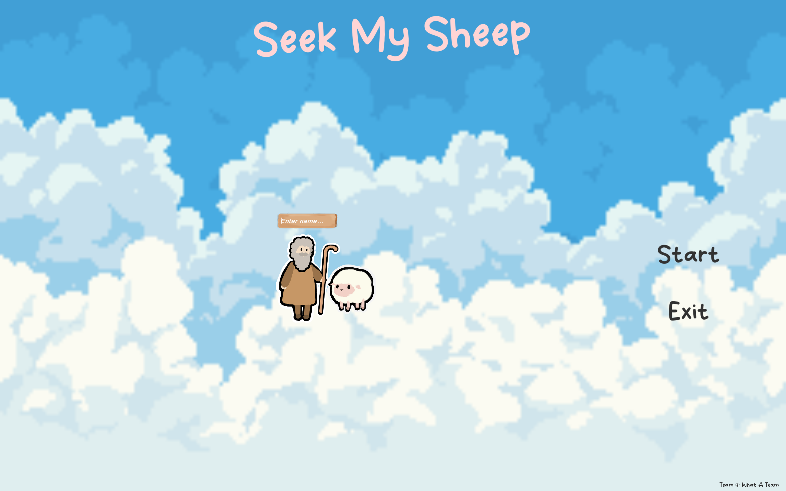

Developers Yu Chewei
Wu Juntong
Zhang Tianlei
Yang Zhicheng
Silk Song
Wake the hell up, intern! We have a system to clean.
This version of our game is a fan-work of Hollow Knight in this course. You will play as young Hornet in the underground world, defeat enemies along the way, become a strong fighter in Hollow Nest. In the game, you will explore the vast world, fight with strong enemies and improve abilities or skills of yourself. You can experience fantastic battle with bosses and enjoy beautiful story. Hope enjoy our game.


Developers Zheng Yang
Li Fangbo
Wang Yi
Magic Quest
Explore the magic world, use elements including wood, water and fire and try to solve puzzles and have battles with their help.
Magic Quest is an 2D-adventure game, which means you can do everything we have provided to you to solve continously puzzles and battles. Just play as an magician, you can attack monsters to gain their responding monster cards. And monster cards can in reverse play an important role in battles through the game. Use different types of magic to kill the monsters or just summon proper monsters to help you. Enjoy every puzzles we have designed for each player and finally use what you have learned in our game to beat the final Boss. There is no only proper way to solve a puzzle, so just try, and have a good experience of adventure.
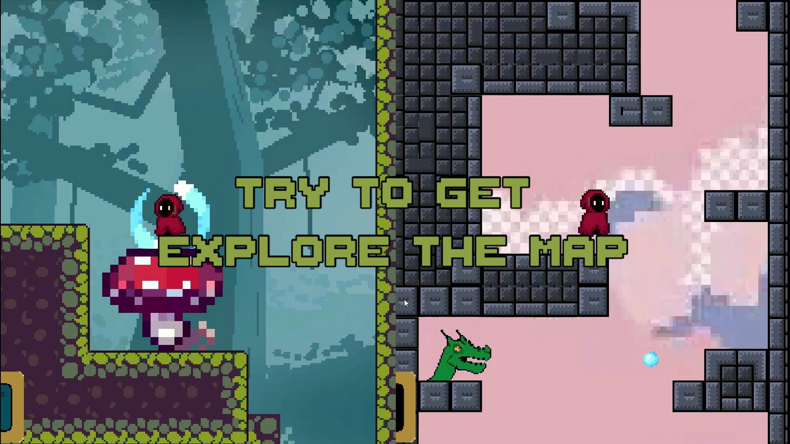 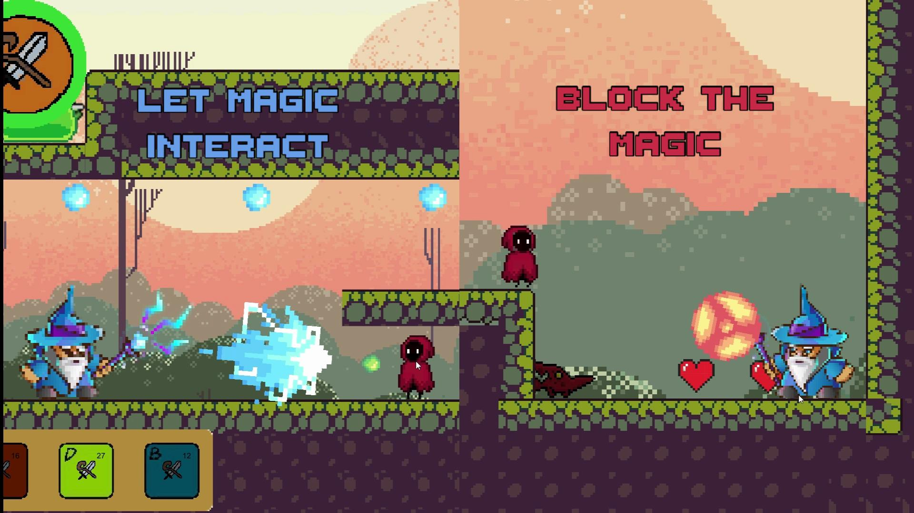 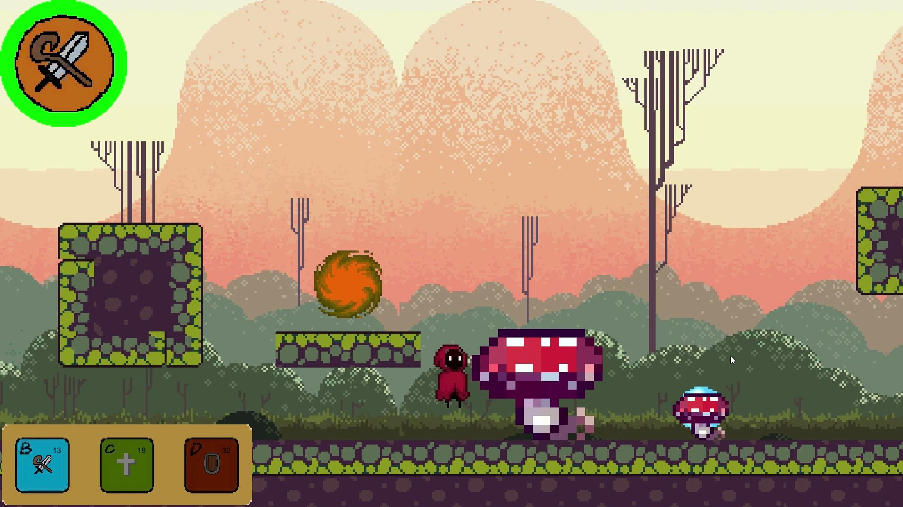 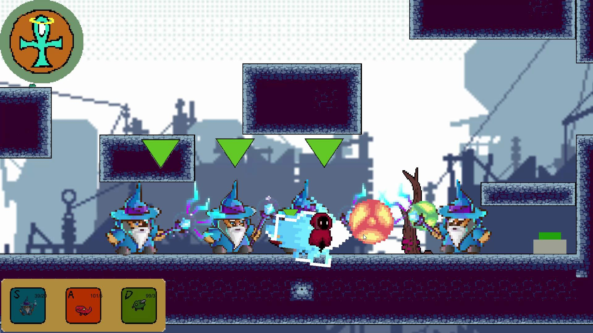 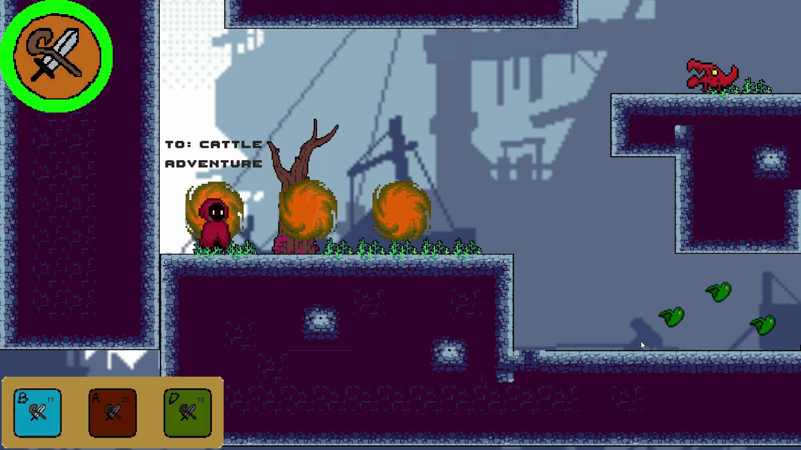Developers
Hanyu Zhang 张涵宇
Binjie Wang 王彬杰
Yichen Shou 寿翌辰
Paramasivam Raja Madanki
An Alliance 2 Escape
Welcome to Enigma!
You both have been teleported here by the "Elektra" lightning that teleports people from different worlds to Enigma. From now on, you two are bounded together! The only way to get back to your world is helping each other getting past some 3 areas. But Beware!! There will be intricate obstacles your legs and skills are all bounded. Best of Luck!
Game Proposal Windows Build Mac Build

Developers Ni Weihao
Liu Zhuoer
Wang Yuyang
Xue Tingyun
Parallel Forest
WHAT IF THE OTHER SIDE OF THE WORLD LIES THE ANSWER?
A man wakes up from the depths of the jungle to find himself in a predicament, but he can switch between two parallel worlds to help him complete his adventurous escape in the original world through the perspective of the other world. However, after completing several organ adventures with the help of this special feature, he finds himself permanently trapped in the parallel world when he switches to it for the last time.........
Game Proposal
Click to Play
Click to Download EXE


Developers
Huang Yawen
Zhang Gege
Tang Congrong
Liu Que
SpaceCat
What, is that a cat exploring the universe?
You're right, yes, the cat is on her way to the next planet!
Join the cosmic escapades of "Space Cat," a delightful 2D challenge game. Embark on an interstellar escapade as an inquisitive cat, meandering through the vastness of space between three distinct planets. Ready to execute thrilling catapult maneuvers!
Get ready to be captivated by the enchanting tale of Space Cat, where adventure, skill, and determination meld together to create an unforgettable gaming experience. Are you up for the challenge? The cosmos awaits your cat prowess!

 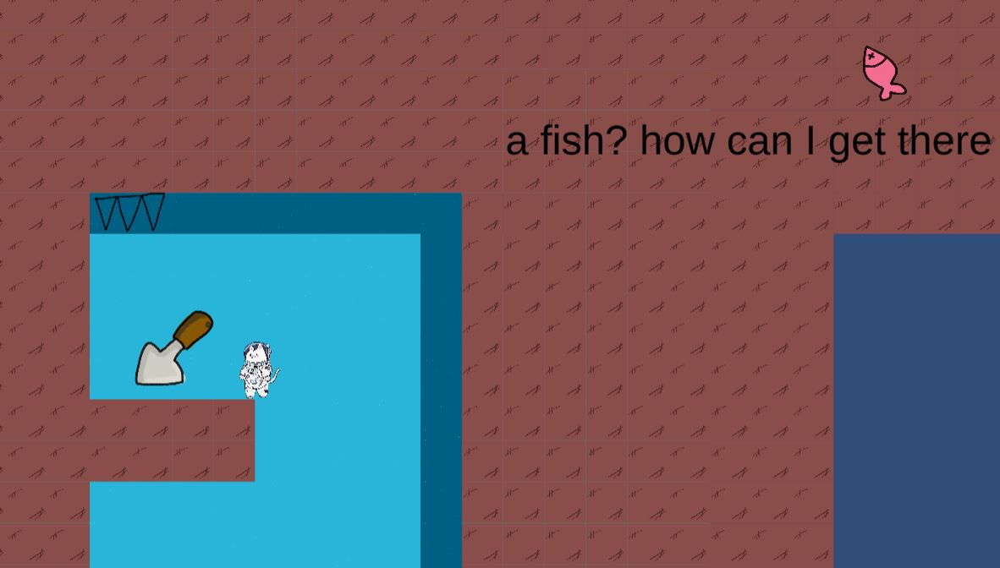
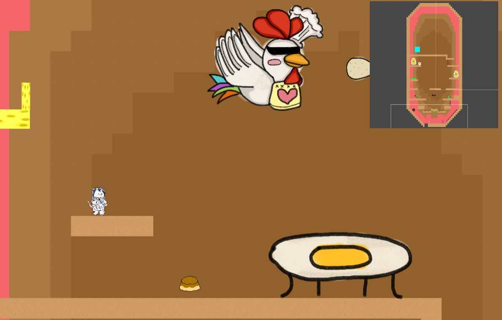
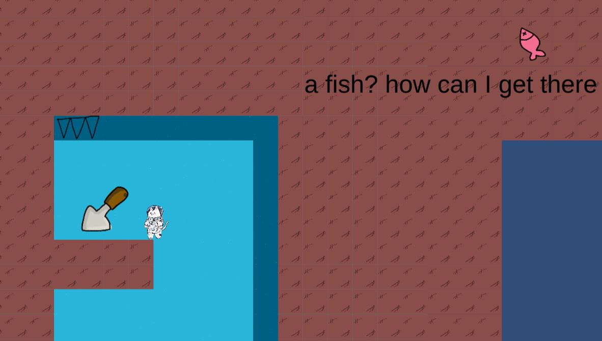
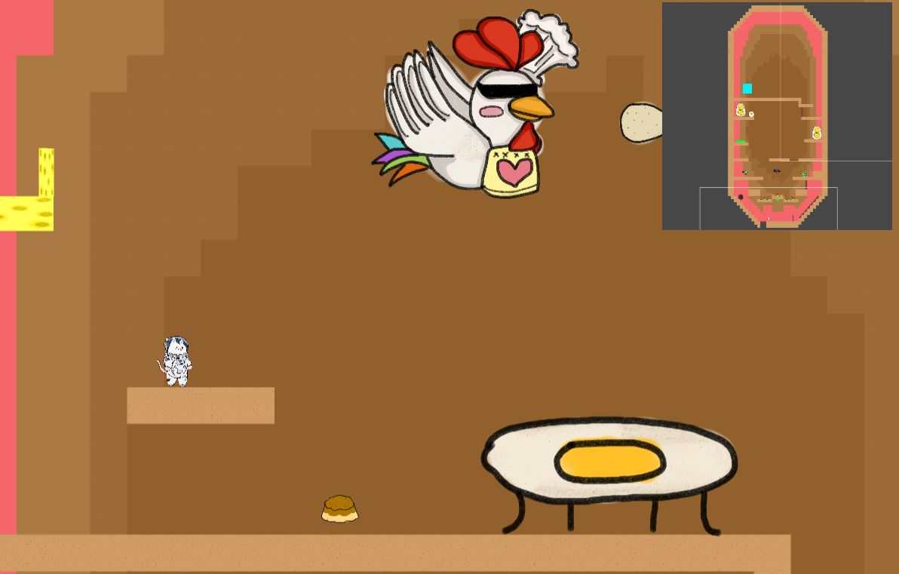